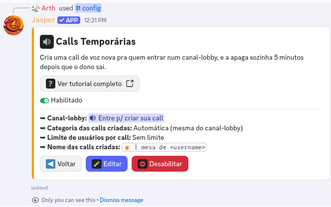
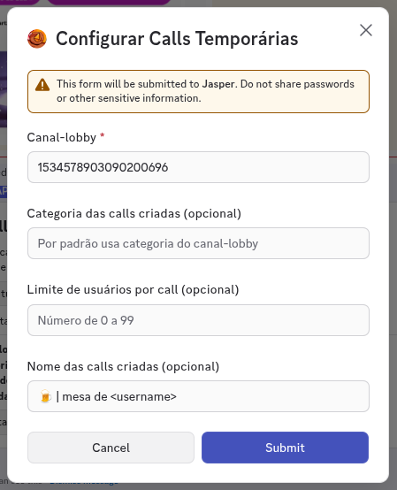
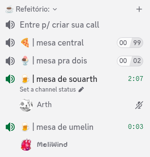

➥ Calls Temporárias é minha função que cria uma call de voz nova pra cada pessoa que entra num
canal-lobby, e apaga a call sozinha quando ela não for mais usada. Ninguém precisa pedir canal pra
administração, e o servidor não fica entulhado de call vazia.
➥ Configurar essa função é coisa de gente com permissão de Administrador. E eu preciso de
Gerenciar canais pra criar e apagar as calls, e de Mover membros pra levar a pessoa até a call
dela.
➥ Segue um pequeno tutorial de como configurá-la:
1. Use o comando /config. Vou abrir o Painel de Configuração do
Servidor, com uma seção para cada funcionalidade. Clique no botão Ver da seção
Calls Temporárias e depois em Habilitar.

">
2. Vou abrir um formulário com quatro campos. Só o primeiro é obrigatório:
▸
Canal-lobby: o ID do canal de voz que serve de porta de entrada. Quem entrar nele ganha uma call.
▸
Categoria das calls criadas (opcional): onde as calls novas vão nascer. Se deixar em branco, uso a
mesma categoria do canal-lobby.
▸
Limite de usuários por call (opcional): um número de
0 a 99. Zero significa sem limite.
▸
Nome das calls criadas (opcional): o texto que vira o nome do canal. Onde você escrever
<username>, eu troco pelo nome de usuário de quem criou a call. Por
exemplo,
Sala de <username>. Sem nada aqui, o nome da call é só o nome de usuário.

3. Pronto, já está funcionando. Agora quem entrar no canal-lobby tem uma call criada na hora, e eu
movo a pessoa pra dentro dela automaticamente.

4. Quem criou a call é o
dono dela, e recebe permissões só ali dentro:
Gerenciar canal,
Mover membros,
Silenciar membros e
Ensurdecer membros. Ou seja,
dá pra renomear, trancar e moderar a própria call sem precisar de cargo nenhum no servidor.
5. Cada pessoa tem
uma call por servidor. Se você já tem uma aberta e entra no lobby de novo,
eu te movo pra sua call em vez de criar outra.
6. A call é apagada
5 minutos depois que o dono sai. Se ele voltar antes disso, cancelo a
exclusão e a call continua de pé, com todo mundo que estava lá dentro.
7. Pra mudar qualquer um desses campos depois, volte no
/config, clique
em
Ver e depois em
Editar. Pra desligar, use o botão
Desabilitar na mesma seção, que
preserva o que você já configurou.
➥ Espero que você aproveite! Qualquer dúvida, sinta-se livre para perguntar no meu
canal de suporte.
Publicado 7 de agosto de 2026. Dependendo da data de publicação, o texto
pode estar levemente desatualizado.